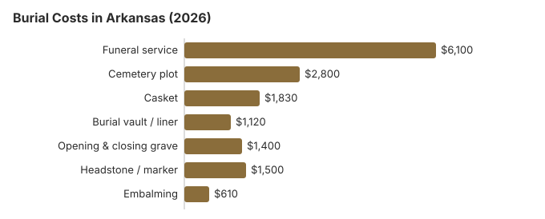

Burial Costs in Arkansas (2026)
Arkansas burial prices are among the lower ones on this site, but the bills still add up: our estimate for a complete burial is $13,750 to $18,250, split between the funeral home and a separate cemetery invoice. Arkansas also has an unusual rule that every burial must be in a registered cemetery. Below are the line-item prices, that rule, and where Arkansas families can save.
Pricing an Arkansas Burial
| What you pay for | Arkansas estimate | Range |
|---|---|---|
| Funeral service | $6,100 | $4,575 – $7,930 |
| Cemetery plot | $2,800 | $1,400 – $5,600 |
| Casket | $1,830 | $610 – $4,880 |
| Burial vault / liner | $1,120 | $800 – $10,000 |
| Opening & closing grave | $1,400 | $500 – $3,000 |
| Headstone / marker | $1,500 | $500 – $5,000+ |
| Embalming | $610 | $500 – $1,500 |
Before relying on any number here: each Arkansas figure is modelled, not collected from providers, and none of it is a quote. Use it to check whether a price list looks high. How we model Arkansas prices is part of our method and you should also read our disclaimer.
State sources: same division.

With the cemetery's fees counted alongside the funeral home's, our Arkansas estimate is $13,750 to $18,250, and where in that range a family ends up turns on the casket, the headstone and the cemetery chosen.
Kinds of Burial Available in Arkansas
Spending Less on Burial in Arkansas
Three places an Arkansas burial bill can usually come down:
- Ask for itemized prices. An Arkansas funeral home must give you its General Price List; cemeteries are under no such obligation, though many will itemize when pressed instead of quoting one bundled figure.
- Ask about church and family cemeteries. Working church and family cemeteries are still common in rural Arkansas, and their plots often cost 30 to 50% less than at a commercial memorial park.
- Check for a county veterans' section. Many Arkansas counties keep their own veterans' sections, separate from the national cemeteries.
Getting Arkansas Quotes by Phone
Many Arkansas families expect the funeral home to handle the whole bill, but the cemetery charges separately, and church, fraternal and municipal cemeteries usually charge less than commercial parks. Because Arkansas allows burial only in a registered cemetery, a family plot on a farm has to be registered before it can be used, which is worth knowing early if relatives hope for a burial at home. Shopping is free: under the FTC Funeral Rule (16 CFR 453.2(b)(1)) every Arkansas funeral home has to give prices over the phone, so two or three quotes can be collected before deciding.
Burial Resources
- Funeral Consumers AllianceNonprofit consumer advocacy for funeral pricing
- Headstone & Monument GuideCosts, types, and buying tips
- Green Burial OptionsEco-friendly and natural alternatives
- Best Online Casket RetailersCaskets bought online often cost less
- Best Burial InsuranceCompare plans to cover burial expenses
Compare Funeral Costs
- Average Funeral Cost in 2026National cost breakdown with real prices
- Cremation vs. Burial Cost ComparisonSide-by-side price comparison to help you decide
- Funeral Cost BreakdownEvery line item explained: know what you're paying for
- Cheapest Funeral OptionsLower-cost alternatives, with typical price ranges
- Direct Cremation: Most Affordable OptionNFDA 2023 median $2,645 with a family-supplied container (latest available)
- How to Compare Funeral PricesStep-by-step guide to getting the best price
The casket and the headstone can both be bought outside the funeral home. Our online casket retailer guide and headstone cost guide show typical prices, and the payment assistance guide lists help that may apply to an Arkansas family.
Frequently Asked Questions
How much is a complete Arkansas burial?
By our estimate, an Arkansas burial includes about $6,100 for the funeral home's service, $2,800 for a plot, $1,830 for a casket, $1,120 for a vault and $1,400 for opening and closing, plus a headstone at $500 to $5,000. Together that is $13,750 to $18,250.
Will an Arkansas cemetery require a vault?
Most Arkansas cemeteries require one by their own rules; state law rarely does. The container keeps the ground over the grave from settling. Expect $800 to $10,000, and ask whether a basic liner will do.
How can an Arkansas burial cost less?
Choose direct burial: no embalming, viewing or service, and the lowest burial price on an Arkansas list. Natural burial, without embalming and in a biodegradable container, is usually the next cheapest, at cemeteries that allow it.
How do I compare cemeteries in Arkansas?
Get each cemetery's prices in writing for the plot, opening and closing, and any vault requirement. Most cemeteries are outside the FTC Funeral Rule, so they do not have to give a list, but most will. For a veteran, Arkansas has two VA national cemeteries, in Fayetteville and Fort Smith.
Are there charges beyond the Arkansas burial estimate?
Some outside purchases. An Arkansas funeral home typically fronts the money for certified copies of the death certificate, an obituary and flowers, then bills them separately; they sit outside our $13,750 to $18,250 range.
Is green burial available in Arkansas?
It is possible but not common. Arkansas has few dedicated natural burial grounds; a conventional cemetery may have a section that allows unembalmed burial in a shroud or plain box. Our green burial guide explains the choices; then call nearby cemeteries, keeping in mind that any burial ground must be a registered cemetery.
More for Arkansas
Arkansas allows burial only in a registered cemetery
Arkansas law is blunt: it is unlawful to bury a body anywhere other than a registered cemetery, and the sexton or person in charge keeps a record of each burial on a Department of Health form (Ark. Code Ann. § 20-17-902; checked October 29, 2026). A family plot on private land has to be registered as a cemetery before anyone is buried there.
- When a permit is needed: under Arkansas Department of Health rules, a burial-transit permit is required for cremation or for taking a body out of the state, and the state registrar or district representative issues it at a funeral director's request (20 CAR § 1-701, Code of Arkansas Rules; checked October 29, 2026).
- In-state burials: the same rule lets the permit be waived when someone who died in Arkansas is buried in Arkansas.
Arkansas burial oversight and where to get help
Funeral homes handling burials in Arkansas are licensed by the Arkansas Insurance Department, Funeral Services Division (501-682-0574). The same division also oversees perpetual care cemeteries (501-371-2646) and prepaid funeral benefits (501-371-2683), because Act 788 of 2017 folded the old Arkansas Cemetery Board and the embalmers board into one board inside the Insurance Department.
Arkansas is not one of the nine states the Funeral Consumers Alliance lists as requiring a funeral director, so an Arkansas family may arrange a burial on its own. A permit is needed first, and each cemetery's policies on graves still apply. Should the family choose cremation instead, Arkansas sets no minimum wait, but a permit is still required (17 CAR § 30-205).
When no one can pay
If nobody claims a body in Arkansas, whoever holds it must look for relatives and check for military service, and the county court decides on a pauper burial (Ark. Code Ann. § 20-17-702). (Source: Ark. Code Ann. § 20-17-702.) Social Security's one-time $255 death payment can be claimed within two years by a surviving spouse or child; it goes to them, not to the cemetery.
Eligible veterans pay nothing for a grave, its opening or a government headstone at a national cemetery. Arkansas has Fayetteville National Cemetery (479-442-2566) and Fort Smith National Cemetery (479-783-5345), plus state veterans cemeteries at Birdeye (870-588-4608) and North Little Rock (501-683-2259) (source: VA National Cemetery Administration).
Next steps in Arkansas
- Treat the cemetery as a second purchase and get its fees on paper.
- Confirm the cemetery is registered with the state, since Arkansas burials must take place in one.
- If the family cannot pay, speak to the county judge's office first.
- Veterans' families can call Fort Smith or Fayetteville with the DD214 in hand.
- Pricing problems with a funeral home go to the Insurance Department's division at 501-682-0574.